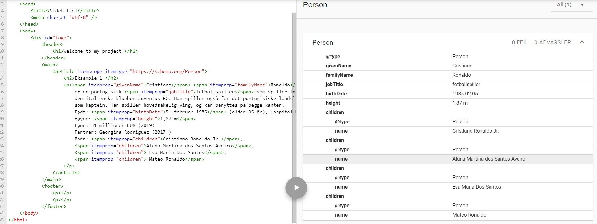

Eksample 1
Cristiano Ronaldo er en portugisisk fotballspiller som spiller for den italienske klubben Juventus FC. Han spiller også for det portugisiske landslaget som kaptein. Han spiller hovedsakelig ving, og kan benyttes på begge kanter. Født: 5. februar 1985 (alder 35 år), Hospital Dr. Nélio Mendonça, Funchal, Portugal Høyde: 1,87 m Lønn: 31 millioner EUR (2019) Partner: Georgina Rodríguez (2017–) Barn: Cristiano Ronaldo Jr., Alana Martina dos Santos Aveiro, Eva Maria Dos Santos, Mateo Ronaldo
